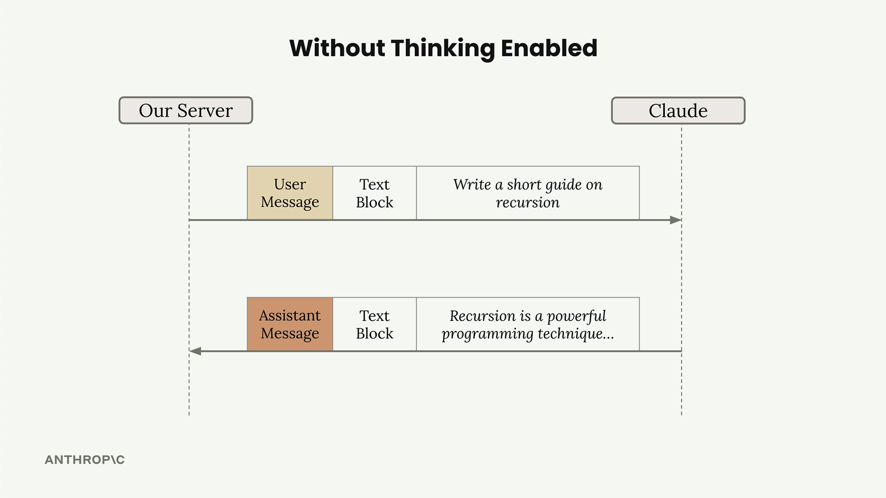
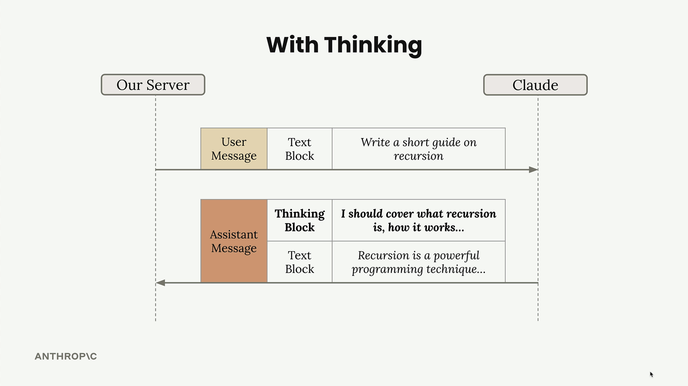

Claude Platform Features
Four capabilities that shape how you architect a Claude application: extended thinking for hard reasoning, vision for image analysis, citations for verifiable answers, and prompt caching for speed and cost.
Extended Thinking
Extended thinking is Claude's advanced reasoning feature that gives the model time to think through complex problems before generating a response. When enabled, Claude produces a thinking process that can be surfaced to help you understand how the model approached the query.
This feature significantly improves Claude's ability to handle complex tasks with greater accuracy, but it comes with important trade-offs. You'll be charged for all tokens generated during the thinking phase, and the additional processing time increases response latency. The key is knowing when the improved intelligence justifies the extra cost and wait time.
Configuration. Current models use thinking: {type: "adaptive"} — Claude decides when and how deeply to think. The old fixed budget_tokens setting is rejected with a 400 on Opus 5, Opus 4.7/4.8, Sonnet 5 and Fable 5. Depth is now controlled with output_config: {effort: "low"…"max"}.
Visibility. The raw chain of thought is never returned. On current models display defaults to "omitted" (thinking blocks arrive with empty text); set display: "summarized" for a readable summary. So "a visible thinking process users can examine" no longer holds literally.
When to Use Extended Thinking
The decision to enable extended thinking should be driven by your prompt evaluations. The recommended approach:
- Write and test your prompt without extended thinking first
- Run evaluations to measure accuracy
- If results aren't meeting your standards after prompt optimization efforts…
- …then consider enabling extended thinking as a solution
How Extended Thinking Changes Responses
Without extended thinking, Claude's response flow is straightforward — you send a user message with a text block and receive an assistant message with a text block in return.

With extended thinking enabled, the response structure changes. The assistant message now contains two distinct blocks — a thinking block followed by the text block:

| Assistant message contains | |
|---|---|
| Without thinking | text block |
| With thinking | thinking block + text block |
The Signature System
Each thinking block includes a cryptographic signature that serves an important security purpose. This signature ensures that the thinking text hasn't been modified when you include the message in future conversation turns.
Claude relies heavily on the thinking content for response generation, so preventing tampering is crucial for maintaining safe and consistent behavior. If you modify the thinking text, the signature validation will fail.
Practical rule: echo thinking blocks back unchanged when continuing a conversation on the same model.
Image Support (Vision)
Claude's vision capabilities let you include images in your messages and ask Claude to analyze them in sophisticated ways. You can ask Claude to describe image contents, compare multiple images, count objects, or perform complex visual analysis tasks.
Limits to Know
| Limit | Value |
|---|---|
| Images per request | Up to 100 across all messages |
| Max size per image | 5 MB |
| Max dimension — single image | 8000 px height/width |
| Max dimension — multiple images | 2000 px height/width |
| Accepted formats | Base64 encoding or a URL to the image |
| Token cost | tokens = (width px × height px) / 750 |
Prompting Techniques
The most important thing to understand about Claude's vision capabilities is that good prompting techniques are absolutely critical. Simple prompts often produce poor results, even with clear images.
For example, asking "How many marbles are in this image?" with an image containing 12 marbles might return an incorrect count of 13. You can dramatically improve accuracy by applying the same prompt engineering techniques you'd use for text:
- Providing detailed guidelines and analysis steps
- Using one-shot or multi-shot examples
- Breaking down complex tasks into smaller steps
Instead of a simple question, provide Claude with a methodology:
PromptAnalyze this image of marbles and determine the exact count using this methodology:
1. Begin by identifying each unique marble one at a time. Assign each a number as
you identify it.
2. Verify your result by counting with a different method. Start from the
bottom-left corner and work row by row, from left to right.
What is the exact, verified number of marbles in this image?Real-World Examples
- Fire risk assessments
- Design-to-mobile-layout conversion
Citations
When Claude answers questions based on documents you provide, users might assume it's just pulling information from its training data. But what if Claude is actually citing specific sources? The citations feature lets you show users exactly where Claude found its information, building trust and transparency into your AI applications.
Why Citations Matter
Without citations, users see Claude's responses as coming from memory. They have no way to verify the information or understand that it's based on specific documents you provided. Citations solve this by showing users the exact source material Claude used to generate each part of its response.
Citation Structure
Each citation contains:
| Field | Meaning |
|---|---|
cited_text | The exact text Claude is referencing from your document |
document_index | Which document (if you provided multiple) |
document_title | The title you assigned to the document |
start_page_number | Where the cited text begins |
end_page_number | Where the cited text ends |
start_page_number / end_page_number are the PDF form (page_location). Plain-text documents instead return char_location with start_char_index / end_char_index, and custom content returns content_block_location. Branch on the citation's type rather than assuming page numbers are always present. Citations are also incompatible with output_config.format — combining them returns a 400.
When to Use Citations
Citations are essential when:
- Users need to verify information accuracy
- You're working with sensitive or important documents
- Transparency about sources builds trust in your application
- Users might want to read the original source material
By implementing citations, you transform Claude from a "black box" that gives answers into a transparent system that shows its work — making your AI applications more trustworthy and verifiable.
Prompt Caching
Prompt caching is a feature that speeds up Claude's responses and reduces the cost of text generation by reusing computational work from previous requests. Instead of throwing away all the processing work after each request, Claude can save and reuse it when you send similar content again.
How Claude Normally Processes Requests
When you send a message to Claude, it doesn't immediately start generating a response. Instead, Claude performs extensive preprocessing work on your input:
- Tokenizes the prompt (breaks text into smaller units)
- Creates embeddings for each token (mathematical representations)
- Adds context based on surrounding text
- Only then generates the actual output text
After sending you the response, Claude discards all this computational work. Everything gets thrown away, and Claude declares itself ready for the next request.
The Problem with Repeated Content
Here's where things get inefficient. Imagine you're having a conversation with Claude, so your follow-up request includes:
- The same original user message from before
- Claude's previous response
- Your new follow-up message
Claude has to reprocess that original message all over again, even though it just analyzed the exact same content moments earlier.
"I just processed that message and threw away all the work I did. I could have reused it!"
How Prompt Caching Solves This
Prompt caching changes this wasteful process. Instead of discarding the preprocessing work, Claude saves it in a cache.
- Initial request — Claude processes your message and writes the computational work to a cache
- Follow-up requests — when Claude sees the same content again, it reads the previously processed work from the cache instead of starting over
The cache acts like a lookup table: "If I ever see this message again, I'll reuse this work I already did."
Key Benefits and Limitations
| Benefits | Limitations |
|---|---|
| Faster responses — cached requests execute more quickly | Short lifespan — the cache lives for 5 minutes |
| Lower costs — you pay less for processing that reuses cached work | Exact matches required — only useful when repeatedly sending the same content |
| Automatic optimization — initial request writes, follow-ups read | — |
Prompt caching is particularly valuable for applications where users frequently reference the same documents, continue conversations, or iterate on similar prompts within a short timeframe. This happens extremely frequently in conversational applications and document analysis workflows.
Cache Breakpoints
Work done on messages is not cached automatically. You have to manually add a cache breakpoint to a block.
- Work done for everything before the breakpoint will be cached
- The cache is only used on follow-up requests if the content up to and including the breakpoint is identical
Cache breakpoints span messages and can cache assistant messages too. When you place a breakpoint, everything up to that point gets cached. Remember: content must be identical to use the cache.
Breakpoint Location
You're not restricted to text blocks. You can add cache breakpoints to:
- System prompts
- Tool definitions
These are actually the most common caching opportunities, since they rarely change between requests.
Cache Ordering
You can add up to four cache breakpoints total. If you place a breakpoint on your last tool, everything up to that tool gets cached — but the system prompt and messages won't be. This gives you fine-grained control over what gets cached based on what changes in your application.
Minimum Content Length
Content must be at least 1024 tokens long to be cached (the sum of all messages/blocks you're trying to cache). A simple "Hi there!" message won't meet this threshold — but if you duplicate that text 500 times, you'll have enough tokens to cache.
The 1024-token minimum is model-dependent — it ranges from roughly 512 to 4096 tokens depending on the model, and a prefix below the threshold silently fails to cache rather than erroring. The 5-minute TTL is the default, but a longer 1-hour cache option is available. Verify caching actually happened by checking usage.cache_read_input_tokens — if it's zero across repeated requests, something in your prefix is changing between calls.
The key to effective prompt caching is identifying the parts of your requests that stay consistent — usually your system prompts and tool definitions — and placing breakpoints strategically to maximize cache hits while minimizing reprocessing.